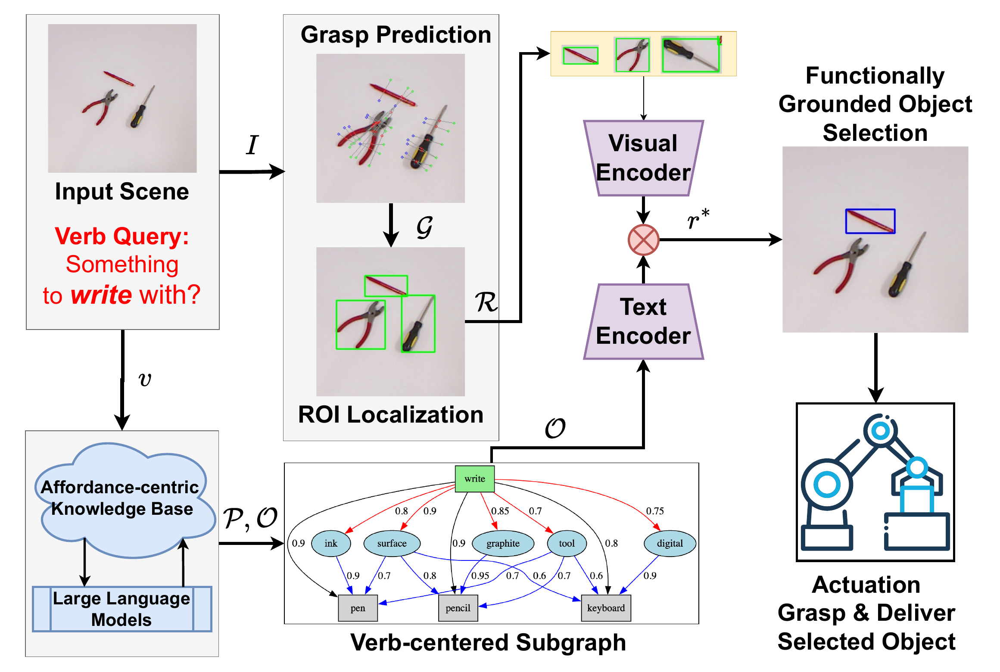
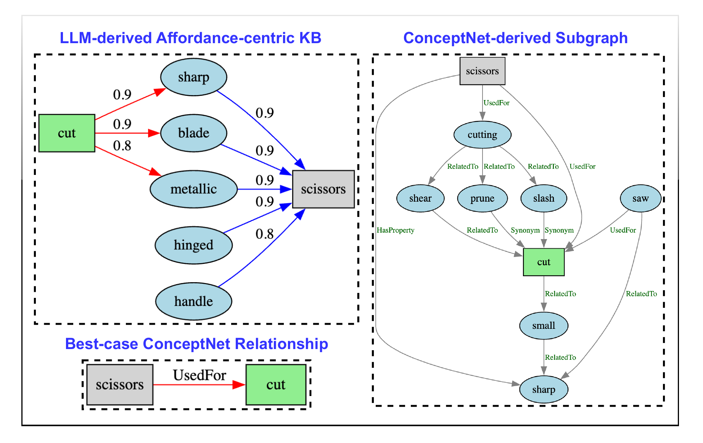

Sense
GraspNet or GraspKpNet proposes 6-DoF grasps. SAMv2 converts grasp locations into class-agnostic regions.
GRASP + ROISYSTEM OVERVIEW
CRAFT-E connects grasp prediction, an affordance-centric knowledge base, and vision-language grounding in one inspectable pipeline.

ABSTRACT
Assistive robots operating in unstructured environments must understand not only what objects are, but what they can be used for. This requires grounding language-based action queries to objects that both afford the requested function and can be physically retrieved. Existing approaches often rely on black-box models or fixed affordance labels, limiting transparency, controllability, and reliability for human-facing applications.
We introduce CRAFT-E, a modular neuro-symbolic framework that combines a structured verb–property–object knowledge graph with visual-language alignment and energy-based grasp reasoning. Its interpretable grounding paths expose why an object is selected while treating grasp feasibility as part of affordance inference. We also contribute a benchmark with unified verb-object, segmentation, and grasp annotations, and validate the complete pipeline on a physical robot.
METHOD
Each representation can be inspected, adjusted, or replaced without retraining an end-to-end policy.
GraspNet or GraspKpNet proposes 6-DoF grasps. SAMv2 converts grasp locations into class-agnostic regions.
GRASP + ROIAn offline affordance graph expands a verb into properties and links those properties to candidate objects.
v → p → oCLIP aligns every candidate region with the functional query without requiring a fixed category label.
ROI + CLIPFunctional, visual, and grasp penalties are fused into a compatibility cost; the best overall match is retrieved.
MIN COSTαEgrasp(Gi) + βEaff(v, orᵢ) + γEalign(bi, v)
Energy is a cost, not a confidence score: fewer penalties mean a better match.WHY A KNOWLEDGE GRAPH?
“Cut” is not an object category. It is a bundle of useful properties—sharp, bladed, metallic, hinged, and handled—that can be connected to objects present in a new scene.

EVALUATION
CRAFT-E is evaluated from controlled tabletop scenes to a physical 6-DoF robot and an ImageNet-derived functional retrieval benchmark.
Accuracy with perfect grasp and detection, compared with 62.89% for GPT-4o in the same setting.
End-to-end grasp rate using the GraspNet pipeline across randomized real-world layouts.
Top-1 accuracy on the ImageNet-derived benchmark among the compared training-free methods.
Metrics and settings are reported from the current arXiv manuscript. See the paper for complete protocols, baselines, and failure analysis.
SUPPLEMENTARY VIDEO
The full overview covers the problem setting, modular pipeline, benchmark protocol, and real-world robot trials.
QUALITATIVE TRIALS
@article{chen2025crafte,
title = {CRAFT-E: A Neuro-Symbolic Framework for Embodied Affordance Grounding},
author = {Chen, Zhou and Lin, Joe and Bulgin, Carson and Aakur, Sathyanarayanan N.},
journal = {arXiv preprint arXiv:2512.04231},
year = {2025}
}